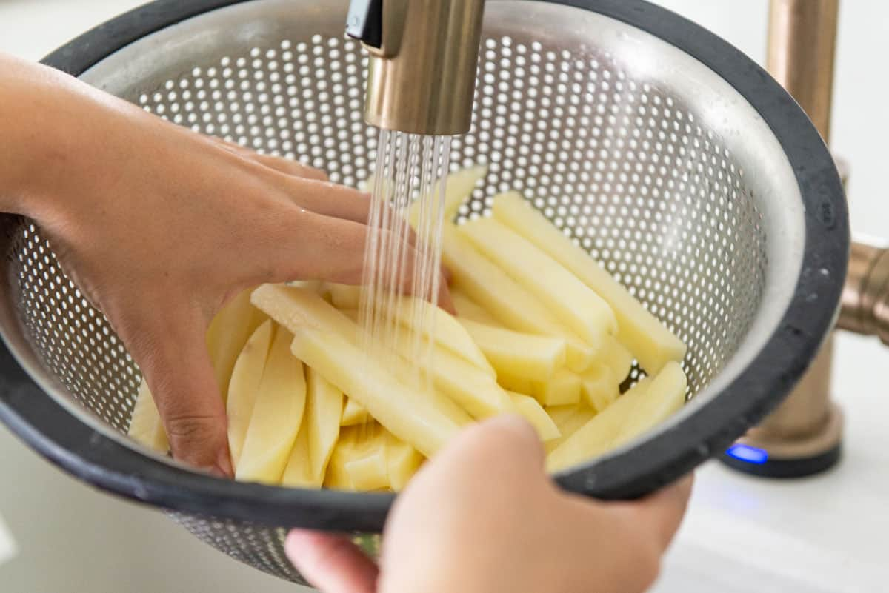
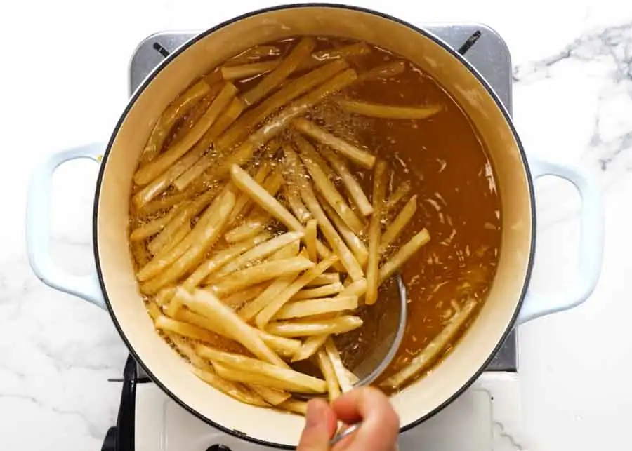

Step 1: Cut the potatoes into fries shapes.
Step 2: Soak your potatoes

Step 3: Rinse your potatoes.

Step 4: Heat oil to 300 degrees. Fry them in about 6 batches for 5-6 minutes.
Don’t overcrowd them by placing too many in at a time, they won’t be
as crispy. Place on a paper towel
Step 5: Rise oil to 400 degrees fry in batches until golden brown, about 5 minutes place it on a towel.
Gravy

Ingredients needed butter, hot water, chicken and beef stock cubes, flour, and onion or garlic pepper
Step 1: melt the soup stock

Step 2: In another pan melt the butter and mix it with flour
Step 3: Pour the stock into the melted butter that was mixed with flour

Step 4: Pour the gravy on the poutine